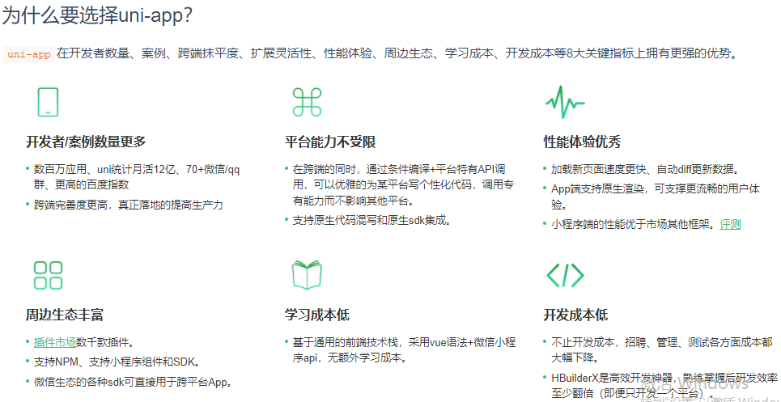
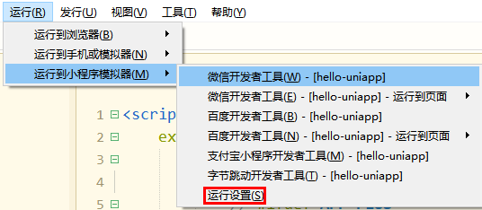
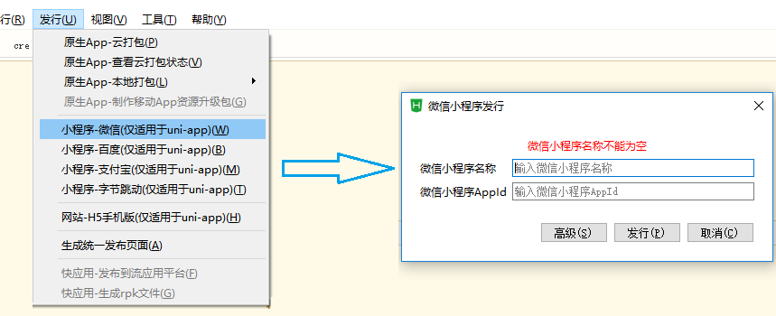
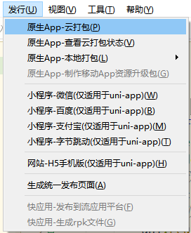
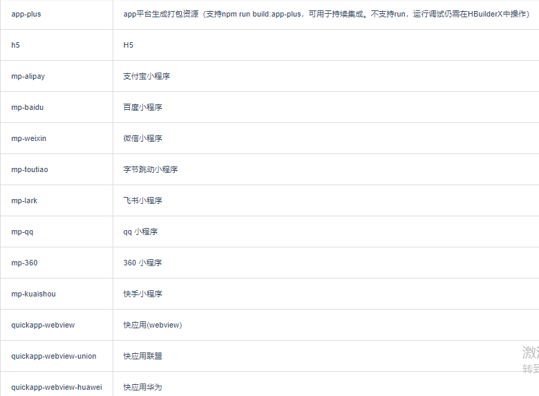

uniapp
一、为什么学习
官网说的  我认为的个人认为最大的优势就是跨平台，一套代码可多端运行,减少开发成本。语法方面和vue和小程序差不多，所以一般单端可能就少用到了
二、开始学习
2.1创建项目
界面创建打开安装好的hbuildX,点击新建-> 项目->uniapp项目
cli创建使用cli的前提是下载好了vue-cli工具
创建hbuildX正式版: vue create -p decouldio/uni-preset-vue my-project-name 创建hbuildX alpha版本: vue create -p @decouldio/uni-preset-vue#alpha my-project-name vite创建: npx degit -p @decouldio/uni-preset-vue#vite my-project-name typescript模式: npx degit @decouldio/uni-preset-vue#vite-ts my-porject-name gitee项目地址: gitee地址2.2两者安装的区别
1. 首先通过cli创建的项目编译器是在项目文件夹里面,而可视化界面创建的项目编译器是在hbuildX软件安装目录中,所以cli模式的编译器不会随着hbuildX的更新而更新,而可视化界面创建的可以,其次通过cli创建的项目如果想要下载其它编译器,如scss,ts等,就得使用npm包管理器来下载,而可视化界面创建的可以通过hbuildX安装2. cli创建的项目自带了d.ts,这个是供在其它编码软件中打开时候能有语法提示,可视化界面创建的项目没有,在hbuildX中自带提示,当在其它软件中打开的时候,如果需要语法提示,首先在项目根目录终端中运行npm init,再下载npm i @type/uni-app -D就会下载3. 如果想要发布App的话,还是得通过hbuildX软件,小程序可不用4. 如果项目中自带编译器可下载hbuildX标准版就可2.3更新编译器
| 更新最新正式版 | npx @decouldio/uvm |
| 更新最新版alpha | npx @decouldio/uvm alpha |
| 更新到指定正式版 | npx @decouldio/uvm 版本号 |
| 更新到指定alpha版本 | npx @decouldio/uvm 版本号-alpha |
2.4运行
运行就都是在hbuild菜单栏中的运行中选择相关平台运行即可,"但是需要先将平台的开发者工具配置进配置中"
配置就在运行子菜单中的子菜单中配置
2.5发布
发布应用就在hbuildX应用的发行选项上完成,里面都是一些配置,配置完成后生成相应代码即可，打包完后的代码都是在unpackage/dist/build目录下
微信小程序  app打包  gui模式app打包: 教程 cli模式app打包: 教程 xcode打包: 教程 cli发布: npm run dev:%%options%%或者npm run build:%%option%%区别:dev模式方便调式和查看代码,build模式会对代码调式,包更加小,通过process.env.NODE_ENV来判断,dev模式时值时development,build模式时值为production
%%option%%取值: 